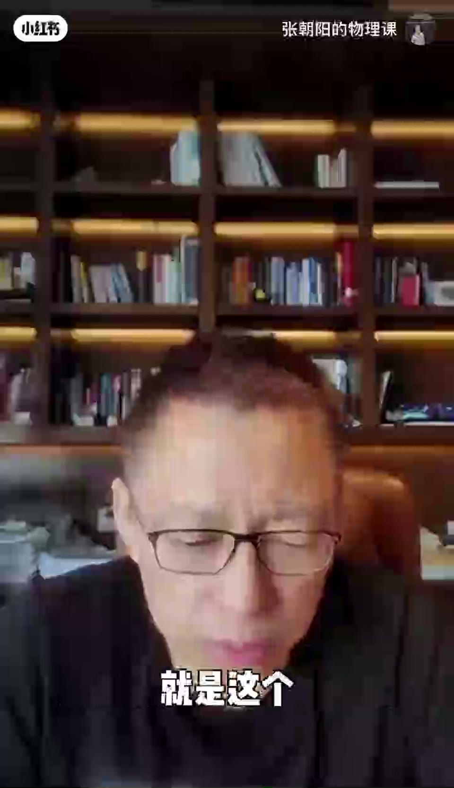
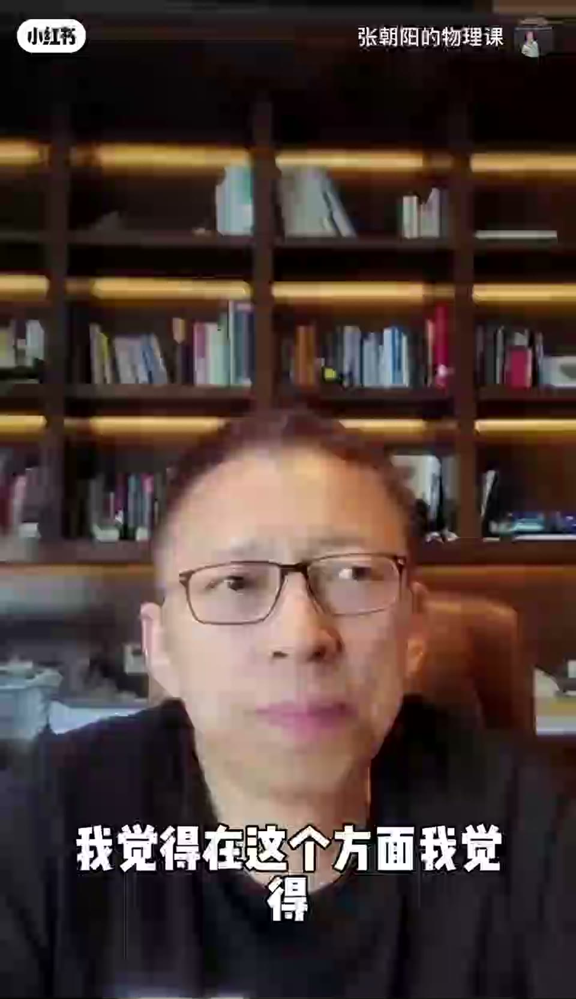
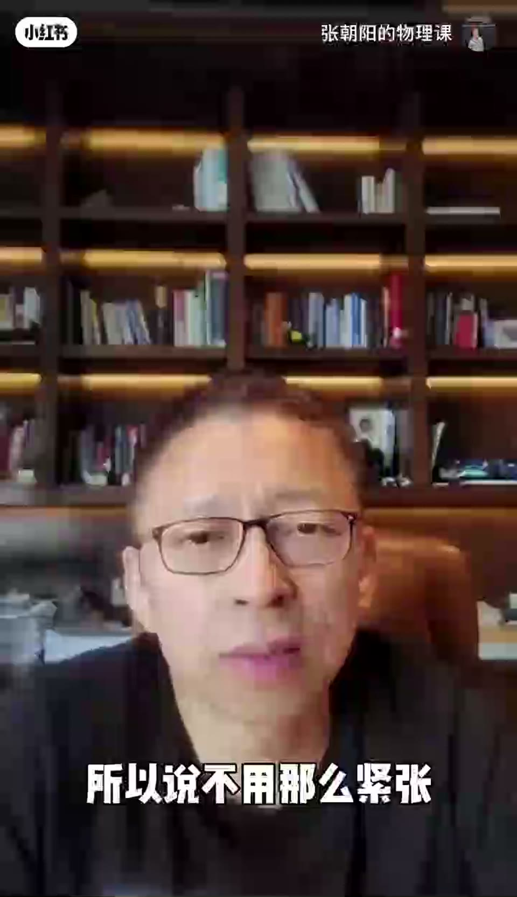
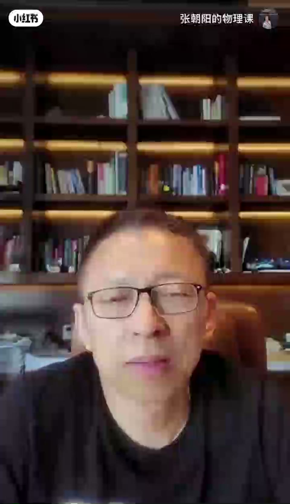

内容要点
一支 2 分钟的考前心理课：告诉考生高考只是人生的开始，未来好坏不由这次考试决定。给出两个不紧张的理由——招生比例提高、大学好坏只是排行的一个维度；同时强调不紧张不等于放任，人生是严肃的，要用心对待每一件事，尽力复习但放下「必须最高分最好大学」的执念。
知识结构
高考只是人生的开始，未来怎么发展不由这次高考决定。招生比例比以前大很多，考上概率很大，不用担心考不上。
不必非要跟同学比、考最好大学。尽力复习做到最好，考不到最高分、上一般大学也能做出伟大的事情。
大学好坏是一种排行、一个维度。普通大学竞争压力小，兴趣和自信心反而更大，不一定要争最高分。
放下执念不等于放任。人生是严肃的，哪怕十七八岁人生已经开始，要严肃认真地度过，高考是重要的一件事，要尽最大力量复习准备。
高考不紧张 = 放下「必须最好」的执念 + 认真对待每一件事。考试只是人生一个维度，尽力而为即是最好。
00:00-00:18高考只是人生的开始
开场宽慰：「高考呢，就是上一个大学，这是人生的开始。未来你的人生怎么发展，发展的好和坏，不是由这次高考决定的。」
对于如何不紧张，讲者给出第一个理由：「现在招生比例比以前大了很多，所以你们每个人的考上的概率几乎是很大的，不要担心自己考不上。」

00:18-00:40放下比较，尽力就好
回应「要跟同学比、考最好大学」的想法：「尽可能复习好一点，做到最好。考上最高的分、考上最好的大学当然更好，但考不到最高分、没发挥好，考个一般的大学也行，哪怕上一个一般的大学，最后你也可以做出很伟大的事情，所以不用那么紧张。」

00:40-01:20大学好坏只是排行的一个维度
讲者用自己的经历佐证：当年不紧张是因为在最好的中学又是班里的前几名，所以很坦然；现在考生不紧张是因为招生比例高，而且上一个好大学和一般大学有差别，但对人生的影响不是定乾坤的。
「大学的好坏也是一种排行，是一个维度的。其实有多个维度，有的大学不一定不好。反倒有一些普通的一般的大学，你在班里面学习竞争压力小，你反倒不错，兴趣和自信心可能就更大。所以上一个大学其实就挺好，不一定要争那个一定是最高分、比别人都牛，或者要上最好的大学。」把心态放下之后，你就不紧张了。

01:20-01:55不紧张不等于放任
讲者澄清：「那我们不紧张，不一定要争取最高的分，那是不是就放任了，一天到晚的玩，也不怎么复习，就去高考？不是的。」
「人生其实是很严肃的，我们如何有意义的度过这个人生，那个是很重要的。哪怕你现在才十七八岁，人生已经开始了，就应该非常认真、严肃、有意义的度过。对人生中的每一件事情都要认真的去做。高考也是很多事情里面非常重要的一件事情，你就要认真的去做。从人生的意义和做事情的态度上，要勤奋的、尽最大的力量去复习、去准备。所以这是这样一个心态。」

完整转录（99段）
以下文本由 Whisper medium 模型自动转录，可能存在少量识别误差，已尽可能修正。
高考呢就是上一个大学呢
这是人生的开始
未来你的人生怎么发展
你的发展的好和坏呢
不是由这次高考决定的
那么现在对你们来说呢
就是这个如何做到不紧张呢
那么首先呢
就说现在这个招生比例比以前这个大了很多
比我们那时候大了很多是吧
所以说你们的每个人的考上的概率几乎是很大的
所以说不要担心自己考不上
那你说啊
我可能是要跟同学比呀
我要比别人厉害呀
我要考前几名啊
我要考到最好的大学
我觉得这个在这个方面呢
我觉得嗯
就是说尽可能的复习好一点
做到最好
但是呢
考上最高的分
考上最好的大学也是当然更好了
但是呢
考不到最高的分
或者是没有发挥出来
考个一般的大学也行
也可接受
这个可以有很多
哪怕你上一个一般的大学
最后你也可以做出很伟大的事情啊
所以说不用那么紧张
我当时的不紧张的原因是因为我是在一个最好的中学
而且又是班里的前几名
所以说呢
就很坦然
现在呢
你们呢
就说不紧张的原因是因为现在招生比例很高
然后呢
上一个好大学
上一个最好的大学和一个一般的大学
其实
有差别
但是呢
就是对人生的影响呢
不是定乾坤的
就说人生还有很多次机会啊
才刚刚开始是吧
这个原因你们不紧张
而且这个大学的好与坏的话
也是一种排行啊什么的
也是一个一种维度的
其实有多个维度啊
有的大学不一定不好是吧
反倒有一些普通的一般的大学呢
你在班里面呢
就说
这个学习竞争压力反倒小
你反倒不错
就是兴趣可能和自信心就更大
所以说上一个大学其实就挺好
我觉得不一定要争
那个一定要是一定要是最高的分儿比别人都牛
或者要上最好的大学
把这个心态放下之后
你就不紧张了
那么那我们不紧张
然后不一定要争取最高的分儿
或者比别人都牛
那是不是就说放任了
哎呀
就是这个一天到晚的玩儿也不怎么复习
就去高考
不是的
我们我们这个面对高考这件事情
就像我们面对人生的任何事情
人生其实是很严肃的
那么我们如何有意义的度过这个人生
那个是很重要的
所以我们在我们的人生当中
哪怕你现在才这个十七八岁十八九岁是吧
嗯
已经是人生已经开始了
所以说就应该非常认真的严肃的有意义的度过
那你应该对你人生中的每一件事情都要认真的去做
那么高考呢
也是这个很多事情里面的非常重要的一件事情
你就要认真的去做
是从这个人生的意义和做事情的态度上
你要勤奋的尽最大的力量去复习去准备
所以这个是一个这样的心态
知道了吧
就说不紧张是因为刚才说的原因
同时呢
但又特别的勤奋和认真的对待
这是
小红书